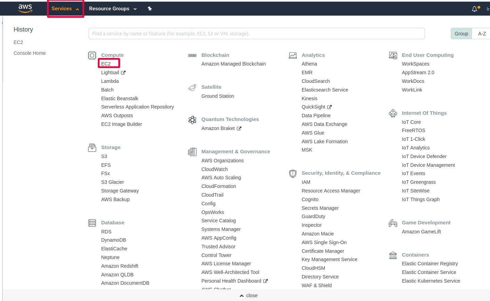
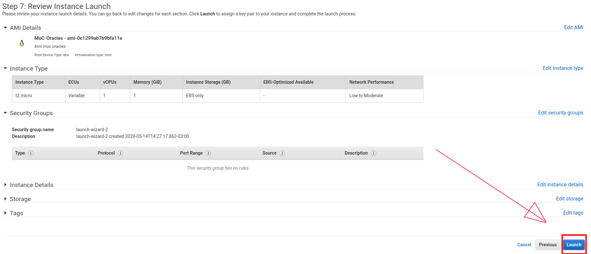
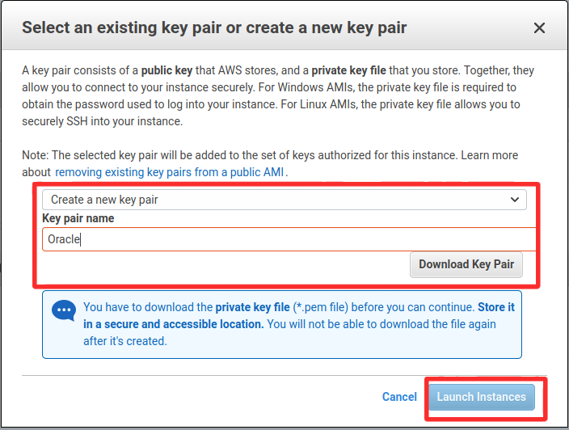

Login with your account and go to the EC2 service.
t./images/login.pnghumbnail)

From the EC2 menu go to Instances and press Launch Instance.

Now select My AMIs and check "Shared with me" from ownership's menu. After that select the AMI MOC-Oracle.


At Security Group press "Add Rule", select "custom RPC" at the type column, in port range enter "5556" and in the source column select "Anywhere". After that press "Review and Launch"

ress "Launch"

Select "Create a new key pair", put a name for the key and download the file. Now run the instance

o connect to your instance follow the instructions from AWS and change "root" for "ubuntu"